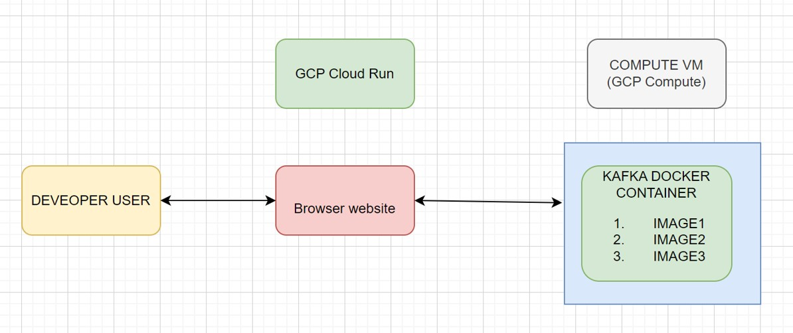
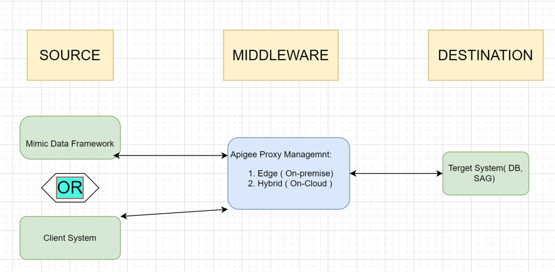

Mimic Data Framework(MDF)
(Imitate,Integrate,Innovate. Your Data, Your Way)
Utility tool for reducing testing cost and also the infrastructure cost.
Existing Scenario : Project sometimes have requirements to test a developed artifact using
A huge set of data each unique but adhering a particular schema
They need a continuous flow of data simulating a Client Source system with variable speed set by us.
Previously the SDET team have to be allocated and they may have a Project Managers and Test Leads to coordinate and then take days to prepare huge number of tests data taking a considerable valuable amount of employee and time. Resources utilized
Test Engineers
Test PM
Days of effort

